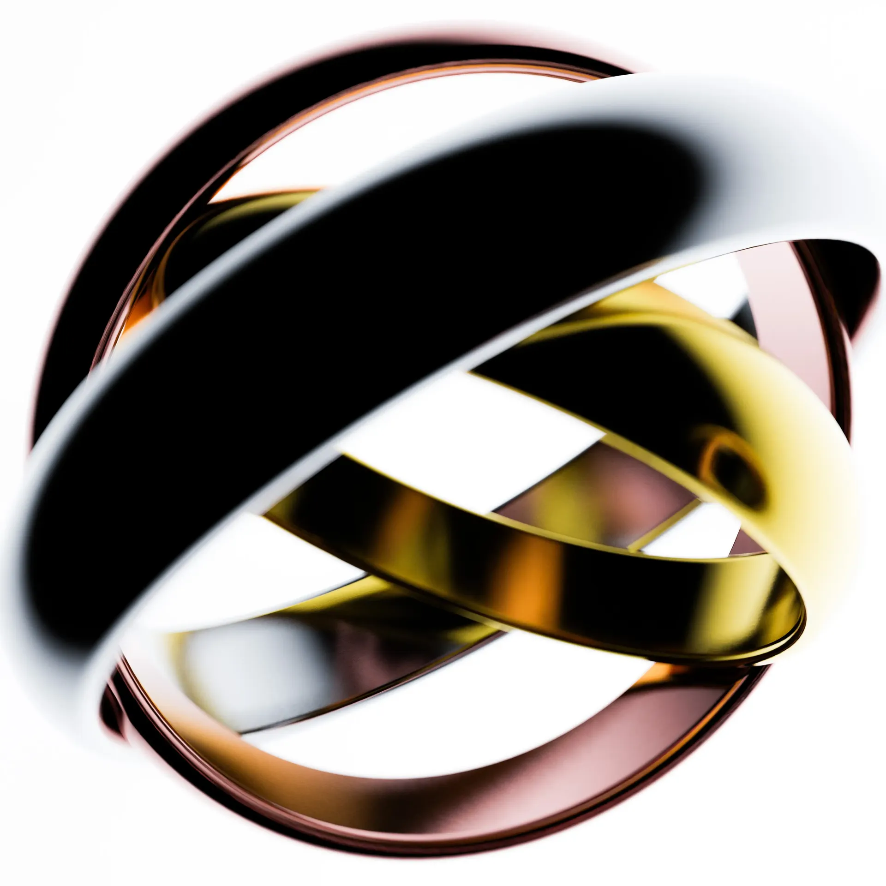

Voir l'étude de cas →
W / 01 · 2026
Voir l'étude de cas →
W / 01 · 2026
Immigrant Québec
Audit stratégique de 1 817 pages, conception d'un système documentaire sur mesure dans Obsidian, pipeline d'automatisation Python/IA et refonte UI/UX complète du média.
Thales Alenia Space
La même précision que les systèmes orbitaux : recherche utilisateur, alignement sémantique d'alarmes satellites (SCC) et démonstrateur IA Edge Computing présenté au Salon du Bourget.
 Voir l'étude de cas →
W / 03 · 2026
Voir l'étude de cas →
W / 03 · 2026
Dynamic Gallery
Un outil web de moodboard transformant des équations paramétriques (Lissajous, Fibonacci, Lorenz) en collages interactifs 2D/3D avec export haute définition.
 Voir l'étude de cas →
W / 04 · 2026
Voir l'étude de cas →
W / 04 · 2026
REX_System
Une visionneuse de médias portable compilée en un unique fichier HTML autonome, conçue pour tourner 100 % hors-ligne sur supports externes sécurisés.
 Voir l'étude de cas →
W / 05 · 2023
Voir l'étude de cas →
W / 05 · 2023
Enjoy The Ride
Identité visuelle, interface UI/UX et game design d'une expérience rétro-gaming interactive pour le Musée National de l'Automobile.

Voir l'étude de cas → W / 06 · 2024Trinity Ring — Cartier
Direction artistique et réalisation sous Blender d'un film publicitaire 3D mettant en scène l'entrelacement des trois anneaux par un éclairage studio minimaliste.
 Voir l'étude de cas →
W / 07 · 2023
Voir l'étude de cas →
W / 07 · 2023
CGI Visual Archive
Une exploration de 13 scènes 3D autour des matériaux procéduraux, de la topologie et de la lumière photographique sous Blender.